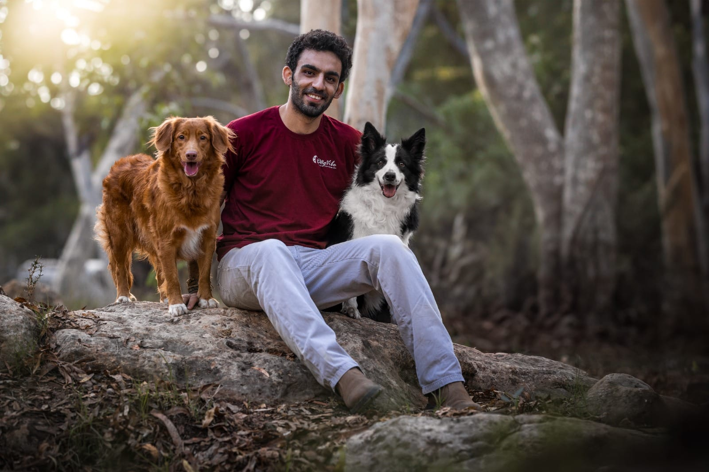
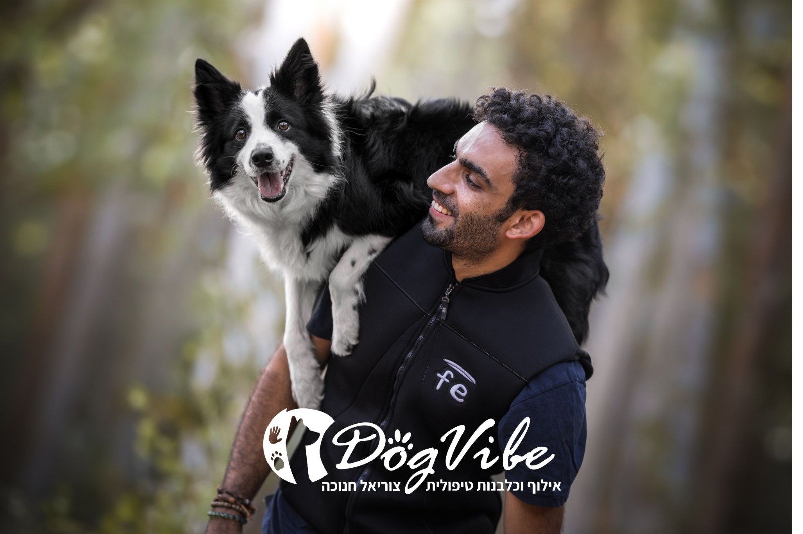

אילוף מקצועי, ליווי אישי ותוצאות מוכחות - הכל דרך הוואטסאפ שלכם.
שלחו סרטוני התקדמות וקבלו פידבק מדויק וסרטוני הדרכה מותאמים אישית.
לא בוטים, לא ניחושים. מענה אישי לכל שאלה ודילמה שעולה בדרך.
מאלפים בסביבה הטבעית של הכלב, בזמן שלכם ובקצב שלכם.

לא מדובר רק בציות לפקודות, אלא בחיבור עמוק, בהנאה משותפת ובעבודת צוות שגורמת לכל רגע יחד להרגיש טבעי וכיפי. הכלב שלכם הוא הרבה יותר מחיית מחמד – הוא השותף שלכם לדרך, ואני כאן כדי להראות לכם איך להוציא מהקשר הזה את המקסימום.
בדיוק בשביל זה פיתחתי את קורס האילוף הדיגיטלי שלי.
זו שיטה שפיתחתי כדי להנגיש לכל בעל כלב את הכלים המקצועיים ביותר, בצורה ששמה אתכם – הבעלים – במרכז. כי בסוף, הקשר הכי חזק נבנה כשאתם אלו שמובילים את התהליך.
לוחצים על הכפתור ומתחילים שיחה בוואטסאפ.
עונים על כמה שאלות כדי שאכיר את הכלב שלכם.
מקבלים הנחיות ראשונות ויוצאים לדרך!
שולחים לי סרטונים שלכם מתרגלים ומקבלים תגובה מקצועית.

הסיפור שלי עם עולם הכלבים התחיל כשהבאתי הביתה את הבורדר קולי הראשון שלי. שם, בתוך העבודה היומיומית, גיליתי את הקסם שבעבודת צוות אמיתית. הבנתי שכלב הוא שותף לדרך, ועם ההכוונה הנכונה – השמיים הם הגבול. במקביל, נחשפתי לעולם בעיות ההתנהגות וראיתי איך עם התנהלות נכונה וחיבור נכון, אפשר למנוע כמעט כל בעיה עוד לפני שהיא מתחילה.
במהלך 5 השנים האחרונות צללתי לעומק עולם האילוף. התחלתי את דרכי המקצועית בהכשרת כלבי נחייה, והמשכתי לקורסים מתקדמים של משמעת, הרחה, הגנה ותקיפה.
אני מאמין שהמאלף האמיתי של הכלב הוא אתה. המטרה שלי היא לתת לך את הכלים, הידע והביטחון לקבוע את הטון והגבולות בעצמך. כשהעבודה נעשית בידי הבעלים, הקשר שנבנה הוא חזק, עמוק וחסין יותר מכל שיטה אחרת.
התהליך שאני מציע מתאים לכל אדם וכל כלב. אם אתם בעלים שרוצים להוציא יותר מהכלב שלכם וליהנות איתו באמת – זה המסלול עבורכם.
מוכנים להתחיל לדבר "כלבית"? הצטרפו לתוכנית שלי ונתחיל במסע.
דברו איתי בוואטסאפשליטה מלאה בכל מצב: תלמדו איך להפוך למנהיגים שהכלב שלכם סומך עליהם, ותיהנו מביטחון מלא ושליטה בטיולים, במפגשים עם כלבים אחרים ובבית.
מעטפת לימודית שעובדת: נפרדים מהניסיונות המזדמנים ועוברים למסגרת מסודרת. הקורס מעניק לכם שיטה עקבית ומובנית שמובילה לתוצאות בשטח, בלי "חורים" בהבנה.
גמישות מקסימלית במסלול ברור: אתם קובעים מתי ואיפה מתאמנים. הקורס מציע מפת דרכים מדויקת שלבי-שלב, כך שתמיד תדעו מה הצעד הבא שלכם – בלי לחץ ובזמן שנוח לכם.
להוציא מהכלב את המיטב: לכל כלב יש יכולות מדהימות שרק מחכות לפריצה. אנחנו נלמד אתכם איך לזהות את הכישרונות של הכלב שלכם ולהפוך אותו לגרסה הכי טובה של עצמו.
בניית שפה משותפת: אילוף הוא לא רק פקודות, הוא תקשורת. הקורס יעזור לכם להבין מה הכלב שלכם באמת אומר, ויעניק לכם את הכלים לגרום לו להבין אתכם – במינימום תסכול ומקסימום חיבור.
הכלב שכולם מדברים עליו: אין תחושה מספקת יותר מלהגיע למפגש משפחתי או לגינת הכלבים ולהראות לכולם כמה הכלב שלכם חכם, ממושמע ומנומס. תתכוננו למבול של מחמאות.